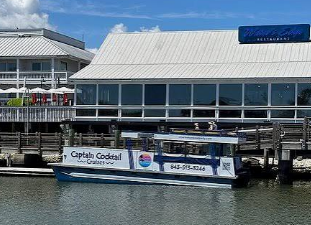
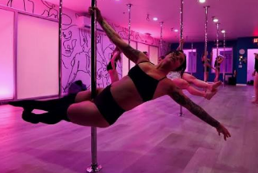
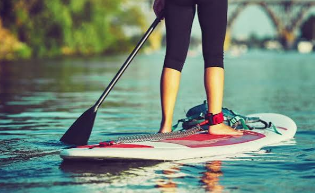
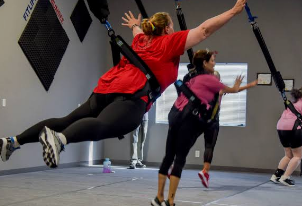

Shem Creek · Old Village · Isle of Palms
Planning a bachelorette party in Mount Pleasant? Start with the good stuff: the best bachelorette activities in Mount Pleasant SC, where to stay, sunset on Shem Creek, and a beach day on Isle of Palms — every listing comes with a price range so the group chat can budget before anyone books.
See Activities Where to StayWhy Mt Pleasant SC for a bachelorette
A Mt Pleasant SC bachelorette gives you everything people love about Charleston — water views, great food, a real nightlife pulse — without the downtown parking battles and King Street hotel prices. Shem Creek is the heart of it: a boardwalk lined with dockside bars, shrimp boats and dolphins, and the best sunset on this side of the Ravenel Bridge. Isle of Palms is about 15 minutes away for a proper beach day, and downtown Charleston is a short rideshare when the bride wants a night out on King Street.
This page covers the full girls weekend in Mount Pleasant SC: bachelorette activities, where to stay, best restaurants and brunch, the IOP beach day, spa and shopping stops, and a ready-to-use weekend itinerary at the bottom.
Bachelorette activities Mount Pleasant SC
These are the fun things to do in Mount Pleasant SC that work best for groups — a mix of on-the-water, active and after-dark. Book the boat and the show first; they fill up on spring and fall weekends.
$$$ · $300–$700+ per show
Price varies by length, group size and date.
A private, professional male entertainment show brought right to your rental, hotel suite or party venue in Mount Pleasant. Brunch shows are available — perfect for a daytime Saturday or Sunday celebration before the beach or the boat.
Book Michael At Your Place
$$$ · $450–$1,200 per boat
Private charters leave right from Shem Creek and head out past the shrimp boats into Charleston Harbor — dolphins, Fort Sumter views and a sunset toast. Most are BYOB with a Bluetooth speaker, so bring the playlist and the sash.
View Boat Cruise
$$ · $35–$65 per person
A private, beginner-friendly pole, chair-dance or twerk class at Inversions Pole Fitness in Mount Pleasant — flower wall and mural included for the group photo. The most-booked girls night out in Mount Pleasant SC for a reason.
Book a Pole Party
$$ · $50–$90 per person
Paddle the marsh creeks off Shem Creek at golden hour with a guide. Low effort, big views, and a good reset the morning after — dolphins are common and you finish steps from the dockside bars.
See Paddle Tours
$$ · $25–$45 per person
Harnessed in and bouncing off the floor — Fly High Bungee on Johnnie Dodds Blvd hosts private group classes that are pure laughs and great content. A fun twist on the usual fitness classes in Mount Pleasant SC.
Book Bungee FitnessWant more workouts the group will actually enjoy? See our bachelorette fitness guide — pole, yoga, bungee and sexy dance classes.
Where to stay
For groups of 6 or more, a vacation rental almost always beats hotel rooms on price and fun. For smaller groups or a mixed-budget crew, the hotels below keep you close to Shem Creek and a quick ride to IOP. Prices are typical nightly rates; spring and fall weekends run at the top of the range.
The best home base. Walk or take a short ride to Shem Creek, Pitt Street and the Pitt Street Bridge for sunset photos. Plenty of room for the private show and a slow brunch at the house.
If the bride wants to wake up to the ocean, rent on IOP and treat Shem Creek as your night out (about 15–20 minutes by rideshare). Book 3–6 months ahead for summer.
Resort pools, a spa and direct beach access — the splurge pick for a relaxed, all-in-one girls weekend in Mount Pleasant SC and IOP.
Harbor views, a small beach and a marina on site, with Shem Creek minutes away. Great for groups who want the water without renting a house.
A stylish, mid-priced boutique option near the base of the Ravenel Bridge — easy to downtown and a short hop to Shem Creek.
Budget-friendly suites near Mount Pleasant Towne Centre — handy for shopping, brunch and splitting costs across a bigger group.
Best restaurants Mount Pleasant SC
Shem Creek is where you eat at least once — boardwalk seating, sunset over the marsh and boats pulling up to the docks. Mix in a big group brunch and one nicer dinner and the whole weekend is covered.
The classic Shem Creek deck: casual seafood, cold drinks and a lively crowd. The easiest first-night meetup spot.
Upscale-casual with big windows and patio seating right on the creek; one of the best brunch Mount Pleasant SC picks for a group.
A dressier seafood dinner overlooking the marsh — a good bride's-choice dinner or date night Mount Pleasant SC locals book for anniversaries.
Old-school, no-frills fried seafood tucked at the end of the creek — a local legend. Cash-friendly; call ahead for bigger groups.
Southern comfort brunch (shrimp and grits, chicken and waffles) on Coleman Blvd. Expect a weekend wait — go early.
A cozy inn, restaurant and bar in the Old Village — polished food and one of the nicer cocktail bars in Mount Pleasant SC.
Coleman Blvd and the Old Village have plenty of cute coffee shops for a slow morning latte run before the beach — grab iced coffees for the whole crew on the way to IOP.
Skip the restaurant wait: order brunch in and book a Michael At Your Place brunch show for a daytime celebration at the house.
Beach day IOP
Isle of Palms is the closest true beach day from a Mount Pleasant bachelorette base — wide sand, calm-ish water and a Front Beach strip with food and drinks steps from the ocean.
Lifeguards in season, restrooms and showers at the county park. Arrive before 10am on summer weekends or parking disappears.
Book delivered setups so no one hauls gear from the rideshare. Add a cooler and a speaker and you're done.
IOP's iconic beach bar right on the sand — post-beach drinks, live music and volleyball.
Casual oceanfront spots line Ocean Blvd — fish tacos, frozen drinks and rooftop views without leaving the beach.
Girls weekend Mount Pleasant SC
A good girls day out in Mount Pleasant SC isn't all boats and bars. Build in a pampering block the day of the big night out.
Massage, facials or a med spa glow treatment. A spa in Mount Pleasant SC can often book the bride and a few friends side by side if you call two to four weeks ahead.
Group blowouts before dinner. The best hair salon Mount Pleasant SC options book fast on Saturdays — reserve with your headcount.
Nail salon mani-pedis for the crew, lash fills and a spray tan in Mount Pleasant SC a day or two before the beach so it sets properly. Waxing appointments (including Brazilian wax) should be booked at least 48 hours before the beach.
Women's boutiques in Mount Pleasant SC along Coleman Blvd and at Towne Centre are ideal for matching crew outfits, swimwear and women's accessories. Designer consignment and women's consignment shops are the budget-savvy way to find a bride-white dress for the night out.
Still finalizing details? Some brides fold a fitting or accessory stop at a Mount Pleasant bridal shop into the weekend — worth it if half the bridal party is already in town.
Girls night out Mount Pleasant SC
Start on the Shem Creek decks for sunset, move to a cocktail bar in the Old Village, then either keep it local or rideshare 15 minutes over the bridge to downtown Charleston. Expect $$ · $40–$120 per person for a full night of drinks and rides.
Check local events in Mount Pleasant SC before you pick dates — seasonal festivals, farmers markets and live-music nights at Shem Creek and Towne Centre can add a free, built-in activity to your weekend.
Sample plan
A plug-and-play plan for a Friday–Sunday bachelorette party in Mount Pleasant SC. Estimated total per person (excluding lodging): $250–$550